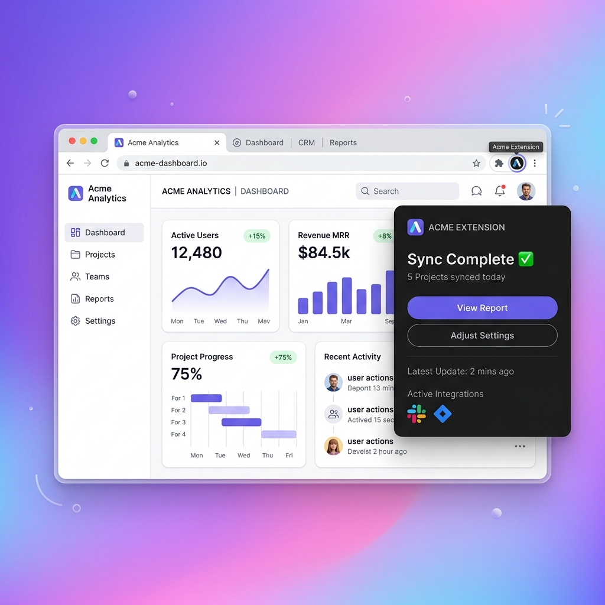

Tired of hitting extraction limits right when you need data the most?
Most data scrapers force you to create an account, log in, and pay for expensive credits.
Worse, they often crash or get blocked when scraping complex pages like Google Maps.

If you are looking for a reliable alternative to Instant Data Scraper, here is exactly how we compare side-by-side.
| Feature | Workfern | Instant Data Scraper |
|---|---|---|
| Data Export Limits | Unlimited data export | Limits your rows per session |
| Account Required | No login required | Requires sign-ups |
| Google Maps Scraping | Auto-scrolls seamlessly | Often freezes or crashes |
| Email Discovery | Deep scans official websites | Only reads the current directory page |
Have you ever found the perfect tool, only to be stopped by a forced account creation screen? Nothing kills momentum faster than having to verify an email address or hand over your credit card details just to test if a scraper actually works.
When you're trying to pull a quick list of contacts, jumping through corporate hoops is the last thing you want to do. That's why we built Workfern as a completely free instant data scraper alternative with no login required. You just install the extension and immediately get to work.
By removing the paywall and the sign-up form, you maintain total privacy while getting your data extraction done in seconds. Your workflow stays smooth, and you never have to remember yet another password.
It's incredibly frustrating when you're halfway through a massive directory, and suddenly a popup tells you that you've hit your daily row limit. Most legacy scraping tools operate on a credit system, deliberately cutting you off to force an expensive subscription upgrade.
If your business relies on high-volume data, these hidden ceilings can bring your entire operation to a halt. Workfern eliminates this bottleneck entirely by operating locally on your machine. Because we aren't pinging an expensive cloud server for every row, we don't need to meter your usage.
You get a genuinely unlimited data scraper with absolutely no limit on the number of pages you scan or the rows you export. Whether you need 500 records or 50,000, you can finally scrape without constantly checking your remaining credits.
Time is money, yet so many extraction tools require you to practically learn a new programming language just to grab a simple table. You spend hours writing CSS selectors, configuring delays, and debugging failed runs, only to realize the website structure changed and broke your entire setup.
You don't need a degree in data science; you just need the data. Workfern is engineered for incredibly fast scraping right out of the box. Instead of manually mapping out every single column, our AI engine automatically recognizes the underlying structure of the directory you're browsing.
With a single click, it parses the messy HTML and transforms it into a beautifully organized spreadsheet. It's the ultimate instant data scraper alternative for professionals who care about speed and simply want to click "Export" and move on with their day.
Trying to manually track competitor pricing, inventory levels, and product reviews across hundreds of pages is a losing game. The ecommerce landscape shifts daily, and if you can't monitor thousands of SKUs quickly, your pricing strategy will always be a step behind.
However, modern storefronts use dynamic loading and infinite scrolling, which routinely confuses basic extraction bots. Workfern was designed to handle these exact complexities, making it a reliable data scraper for ecommerce intelligence. It intuitively understands pagination and smoothly scrolls through product grids without getting stuck on lazy-loaded images.
You can seamlessly pull product names, current prices, and star ratings across massive catalogs in one continuous session. Instead of fighting with broken scripts, you can focus on adjusting your margins and actually analyzing the data you've collected.
Cold outreach only works if your lead list is accurate, but generic scrapers only pull what is visibly on the surface of a directory. Getting a generic "info@" email address from a Yelp listing won't help your sales team close deals. The real pain is the manual labor required to visit each company's actual website afterward to find the true decision-makers.
We built Workfern specifically as a comprehensive web scraping tool for lead generation. It doesn't just grab the directory listing — it actively navigates to the target business's official website in the background. It hunts down hidden contact pages, extracts direct emails, and even checks for underlying technology like Facebook Pixels.
By deeply enriching your leads automatically, you skip the manual research phase entirely and hand your sales team a list of prospects that are actually ready to be pitched.
The best alternative is Workfern because it automatically handles dynamic pages and infinite scrolling without freezing. It offers a truly free experience with unlimited data exports and no hidden limits.
Yes, Workfern is a completely free web scraping extension that requires no login or account creation. You simply install it in your browser and start extracting leads immediately while maintaining complete privacy.
Instant Data Scraper often struggles with Google Maps because of complex dynamic loading, infinite scrolling, and anti-scraping measures. An alternative like Workfern is engineered to auto-scroll and reliably pull emails and phone numbers from complex local directories.
Most free data extractors use credit systems that impose strict daily row limits to force you into paid plans. To bypass these limits, use a local-first scraper like Workfern, which operates entirely in your browser and has absolutely no export limits.
Workfern is highly recommended for ecommerce scraping because it easily navigates pagination and extracts product details without getting stuck on lazy-loaded images. It provides a fast, unlimited data scraper alternative for monitoring competitor pricing and massive product catalogs.
Scrapers often crash on large pages because they consume too much memory or fail to parse complex HTML structures. Switching to an optimized alternative like Workfern ensures fast scraping without crashes, even when pulling thousands of records in a single session.
Yes, while basic scrapers only pull surface-level directory info, advanced alternatives like Workfern perform deep scanning. It actively navigates to a business's official website in the background to find hidden decision-maker emails and detect underlying technologies.
No coding skills are required to use modern scraping extensions. A good instant data scraper alternative will use AI to automatically detect tables and lists, allowing you to click "extract" and download a clean CSV instantly.
You can export unlimited leads by using a scraper that doesn't route your data through expensive cloud servers. Workfern runs locally on your machine, acting as a free web scraper with no login and zero limits on your daily CSV exports.
Start by adding Workfern to your Chrome browser with a single click. Because it's the premier instant data scraper alternative, you never have to create an account, verify an email, or enter a credit card. The tool installs in seconds and sits quietly in your extension toolbar until you need it.
Open the website you want to extract data from, whether it's a local business directory like Yelp, an ecommerce store, or Google Maps. Browse to the page showing the list of leads or products you need. The tool works seamlessly in the background without interrupting your normal browsing experience.
Click the Workfern icon in your browser toolbar to open the scanning interface. Unlike legacy scrapers that require you to manually write CSS selectors or highlight elements, our AI-powered engine automatically detects the most valuable data tables and lists on the current page.
Hit the "Extract" button and watch as Workfern systematically pulls the data. If the directory requires pagination or infinite scrolling, the extension will automatically scroll and load new pages for you. You don't have to manually click "Next" ever again, bypassing the biggest frustration of older tools.
Once the extraction is complete, instantly download your results as a perfectly formatted CSV file. Your new spreadsheet will contain neatly organized columns ready to be imported directly into your CRM or email outreach software, completely free of messy HTML tags or broken rows.
A marketing agency needed to build a database of local plumbers. Traditional scrapers froze on Google Maps' dynamic interface. Using Workfern as an instant data scraper alternative, they simply opened a city search and clicked extract. The tool automatically scrolled through hundreds of listings, pulling names, phone numbers, and websites, while simultaneously scanning official sites for hidden email addresses.
An online retailer wanted to monitor a competitor's changing prices across a 50-page product catalog. Instead of paying for an expensive enterprise scraper, they used Workfern to scan the entire category. The extension smoothly navigated through the pagination, exporting a massive, clean CSV of product names, current prices, and stock statuses with zero row limits.
Switch to the fastest, easiest scraper today.
Start Free Scraping Today